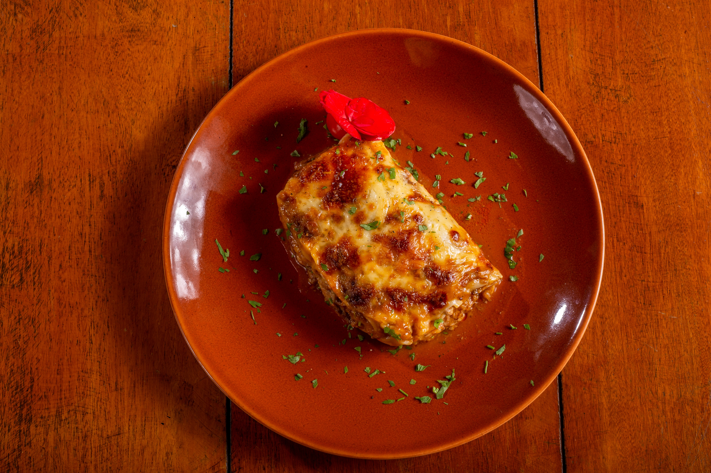
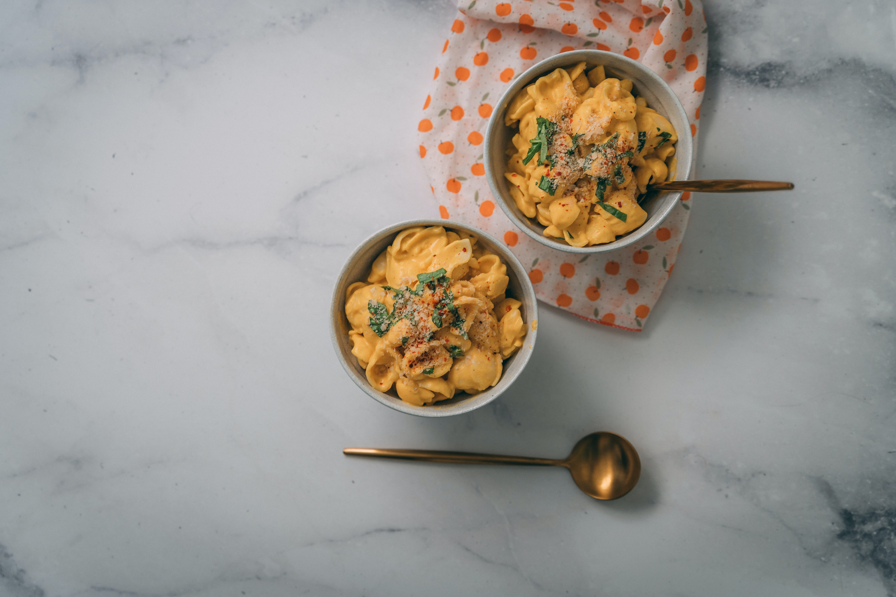

Lasagna
Origin: Michigan Source: Family Recipe Category: Cuisine Our family has been making our special lasgna throughout multiple generations. It is very tasty and also healthy
Recipe Ingredients
- Meat
- Onion and Garlic
- Tomato
- Sugar
- Pure vanilla extract
- Parsley
- Dried Basic leaves
- Black pepper
- Noodles
- Cheese
- Egg
Recipe Steps
- Prepare the meat sauce
- Cook the noodles for correct amount of time
- Layer the lasagna
- Cover with aluminum foil and bake
- Remove from oven and let cool
Mac and Cheese
Origin: Michigan Source: Family Recipe Category: Cuisine My mother has been making her homemade mac and cheese ever since she was a child. It is extremly cheesy and will leave your tastebuds in bliss
Recipe Ingredients
- Macaroni
- Butter
- Flour
- Milk
- Cheese
- Salt
- Pepper
- Garlic
- Mustard
- Worcestershire sauce
- Bread crumbs
Recipe Steps
- Boil the macaroni
- Melt the butter
- Add flour and milk
- Add cheese
- Add salt, pepper, garlic, mustard, and Worcestershire sauce
- Combine macaroni and cheese sauce
- Top with bread crumbs
- Bake
Churros
Origin: Mexico Source: Online Recipe Category: Dessert
Churros are a delicious dessert that are very popular in Mexico. They are very sweet and crunchy and a great choice for a healthy dessert
Recipe Ingredients
- Water
- Butter
- Flour
- Eggs
- Sugar
- Cinnamon
- Vegetable oil
Recipe Steps
- Boil water and butter
- Add flour
- Add eggs
- Combine sugar and cinnamon
- Heat oil
- Pipe dough into oil
- Fry until golden brown
- Roll in cinnamon sugar